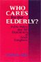
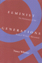

|

|
Who
Cares for the Elderly?
Public Policy and the Experiences of Adult Daughters
Abel,
Emily K.
Distinguished Contribution to Qualitative Gerontology, American
Sociological Association, 1994 |

|
Doing
Comparable Worth
Gender, Class, and Pay Equity
Acker,
Joan
Career of Distinguished Scholarship Award, American Sociological
Association, 1993
Jessie Bernard Prize of the American Sociological Association for
Life Achievement, 1989 |

|
Transfeminist Perspectives in and beyond Transgender and Gender Studies
edited by Anne Enke Lambda Literary Award for Best Book in Transgender Nonfiction,
2013 |

|
Weaving
Work and Motherhood
Garey,
Anita Ilta
William J. Goode Book Award, American Sociological Association
Family Section, 2000 |

|
From Black Power to Hip Hop
Racism, Nationalism, and Feminism
Hill Collins, Patricia
Honorable Mention at the Gustavus Myers Outstanding Book Awards, 2006 |

|
Women
of the New Right
Klatch,
Rebecca E.
Victoria Schuck Award, American Political Science Association,
1988 |

|
Body Language
Sisters in Shape, Black Women's Fitness, and Feminist Identity Politics
Lau, Kimberly J.
Elli Köngäs-Maranda Professional Prize, American Folklore Society, 2011 |

|
Fireweed
A Political Autobiography
Lerner,
Gerda
A PW Book of the Day, June, 2002
Outstanding Achievement Recognition by the Wisconsin Library Association
Literary Awards Committee, 2003
A BookSense top 76 pick in the category, "Life Stories of Some
Famous and Not-So-Famous Women," March/April, 2003 |

|
Las
Hermanas
Chicana/Latina Religious-Political Activism in the U.S. Catholic
Church
Medina, Lara
Outstanding Academic Title, Choice, 2005 |

|
Street
Woman
Miller,
Eleanor M.
Distinguished Scholar Award, American Sociological Association
Criminology Section, 1987 |

|
Transforming
Knowledge
Minnich,
Elizabeth Kamarck
Ninth Annual Frederic W. Ness Book Award, Association of
American Colleges, 1990 |

|
Dangerous
Passage
The Social Control of Sexuality in Women's Adolescence
Nathanson,
Constance A.
Eliot Freidson Outstanding Book in Medical Sociology, American
Sociological Association, 1993 |

|
Mexican
American Women Activists
Identity and Resistance in Two Los Angeles Communities
Pardo,
Mary
Honorable Mention for Outstanding Books Awards, Gustavus
Myers Center for the Study of Bigotry and Human Rights in
North America, 1999 |

|
Job
Queues, Gender Queues
Explaining Women's Inroads into Male Occupations
Reskin,
Barbara F. and Patricia A. Roos
Sex and Gender Section Award for Distinguished Contribution
to the Study of Sex and Gender, American Sociological Association,
1995 |

|
The Ethics of Care
A Feminist Approach to Human Security
Robinson, Fiona
J. Ann Tickner Book Prize from the International Studies Association, 2014 |
|
Between
Women
Domestics and Their Employers
Rollins,
Judith
Jessie Bernard Book Award, American Sociological Association,
1987 |

|
Laotian Daughters
Working toward Community, Belonging, and Environmental Justice
Shah, Bindi V.
Association for Asian American Studies' Outstanding Book Award in the category Social Science, 2014
Honorable Mention, Asia and Asian America Section of the American Sociological Association, 2013
|

|
Feminist
Generations
The Persistence of the Radical Women's Movement
Whittier,
Nancy
Outstanding Academic Title, Choice, 1995 |

|
The
Black Female Body
A Photographic History
Willis,
Deborah and Carla Williams
Finalist for the Publishers Marketing Association's Ben Franklin
Award, Reference Category, 2003
Outstanding Academic Title, Choice, 2002 |

|
Black Venus 2010
They Called Her 'Hottentot'
edited by Willis, Deborah
Susan Koppelman Award for the Best Edited Volume in Women's Studies by the Popular Culture/American Culture Association, 2011 |

|
The Delinquent Girl
edited by Zahn, Margaret A.
Outstanding Academic Title, Choice, 2009 |
|